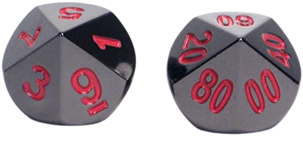
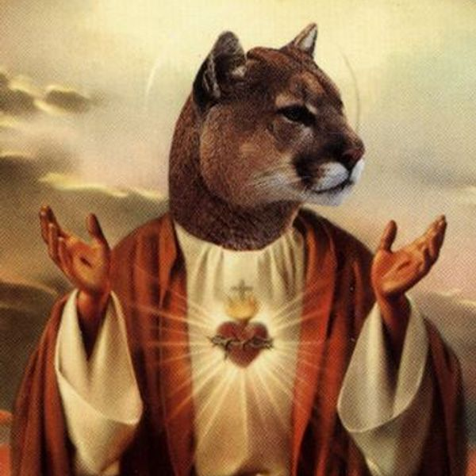

Este dado de diez cara es un trapezoedro o decaedro, que es un poliedro de 10 caras. Cada cara
tiene forma de cometa o deltoide. Es el único que no presenta la morfología de un poliedro regular.
Son algunos de los dados que más se utilizan en los juegos de rol ya que además de su funcionamiento
autónomo como generador de resultados con valores de 1 a 10, se usa habitualmente en combinación con
otro dado de 10 para generar resultados entre 1 y 100 (tirada de percentil), algo muy común en numerosos juegos RPG.
Pueden estar numerados de 1 a 10, de 0 a 9 (cero se lee como diez en muchas aplicaciones) o de 00 a 90 para
porcentajes. A menudo, todas las caras impares convergen en una esquina puntiaguda y las pares en la otra.
La suma de los números en las caras opuestas suele ser 9 (si está numerado 0-9) u 11 (si está numerado del 1 al 10).
El dado de 10 caras en ocasiones se usa como parte de una tirada superior de "D100". Se toma un dado de 10 caras que representa la unidad y otro que indica las decenas, al juntarlos podemos obtener un valor del 1 al 100, siendo 100 "0-00" y 1 "1-00". Este sistema se utiliza en juegos famosos como Aquelarre o La Llamada de Cthulhu.
Ibidum "d8.html" línea 55.
Iván Casado Álvarez